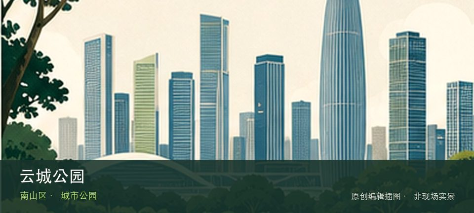

适合谁
适合低强度步行、亲子和城市观察，也方便与附近景点组合；大型活动日应主动缩短。

SHENZHEN GUIDE · 083
留仙洞 · 城市公园
云城公园位于留仙洞总部基地，架空平台、山体连桥和高密度总部建筑组成多层公共空间，适合观察新城如何处理坡地与步行连接。先辨认多层架空公共空间，再观察山体连桥，两者共同说明这里为何不能被同类地点的泛化标签替代。游览重点是多层架空公共空间与山体连桥如何组织城市公共生活，可按同行者体力随时缩短。先确认最想看的节点，再把树荫、休息点、活动占用和雨天退出位置纳入路线。
WHY GO
适合低强度步行、亲子和城市观察，也方便与附近景点组合；大型活动日应主动缩短。
到达云城公园后先确认多层架空公共空间是否可进入，再将山体连桥作为可取消的第二站；遇拥挤、暴晒或降雨就提前折返。
公共交通先到留仙洞总部基地片区，再以云城公园公开参观入口为终点；多入口地点须按计划游线选择入口，并预先锁定返程站点。
导航至云城公园官方开放入口配套或邻近正规公共停车场；周末满位即改乘公共交通，不在绿道口、村道或消防通道临停。
10 月至次年 4 月最舒适；夏季选择清晨或傍晚，雷雨、高温预警时缩短路线或转入室内。
NEARBY IDEAS
 编辑配图·非现场实景
编辑配图·非现场实景
西丽生态公园位于同东路与打石一路交会处东南角，23.5万平方米的山地生态公园保留荔枝林和少量农耕空间，并以阳光草坪、儿童…
 授权实景图
授权实景图
大沙河生态长廊位于西丽至深圳湾沿河，河流从大学城、高科技园穿过密集城区抵达海湾，不同区段呈现生态修复、桥梁和社区使用的变化。
 编辑配图·非现场实景
编辑配图·非现场实景
深圳市水土保持科技示范园位于西丽街道沙河西路4148号，由废弃采石场修复而来的公益性科普园，以水土文化、水土流失模拟、植…